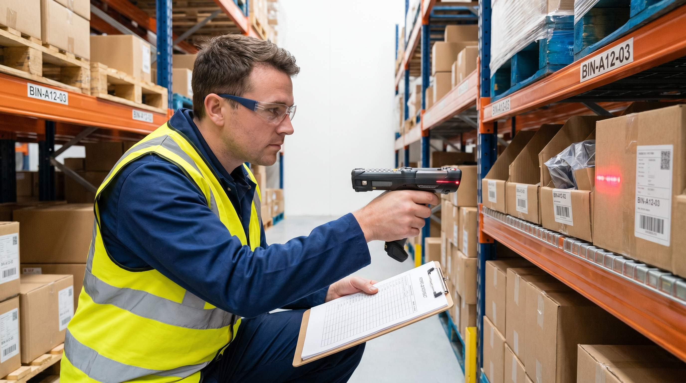

Hvert år, typisk i januar eller december, lukker mange lagre ned i 1-2 dage og taeller alt. Medarbejderne arbejder overarbejde, drift stopper, og der er kaos i en uge derefter mens systemet tilpasses de reelle tal.
Det er den haardeste og mindst effektive maade at sikre lagernoejagntighed på. Den årlige optaelling finder fejl der har ligget i maaneder. Og de fejl har kostet fejlleveringer og mistet salg hele vejen.
Rullende lagertaelling gør det anderledes: du taeller lidt, regelmæssigt, hele aåret. Ingen nedetid. Fejl opdages inden for uger, ikke maaneder.
👉 SmartPacks revisionsmodul gør rullende taelling nemt uden at stoppe driften. Se hvad det kræver
Hvad er rullende lagertaelling?
Rullende lagertaelling (på engelsk kaldet cycle counting) er en metode, hvor du taeller en mindre del af lageret regelmæssigt i stedet for alt på een gang.
Et praktisk eksempel: du har 500 unikke placeringer på lageret. I stedet for at taelle alle 500 på een dag taeller du 25-50 placeringer om ugen. I lobet af 2-3 maaneder er hele lageret taelt igennem. Og saa starter du forfra.
Fordelen er ikke bare at det er mindre kaotisk. Fordelen er at du finder fejl meget hurtigere. En optaellingsfejl fra januar opdages i februar, ikke i næste december.
Hvilke varer skal du taelle hyppigst?
Ikke alle varer er lige vigtige at have styr på. Det er her ABC-klassifikationen spiller ind:
- A-varer: Dine mest solgte og/eller dyreste varer. Disse skal taelles oftest, typisk hver 4-6 uge. En fejl på en A-vare rammer mange ordrer.
- B-varer: Mellemkatregori. Taelles hver 2-3 maaned. Vigtige, men ikke kritiske at have styr på med ugentlig præcision.
- C-varer: Lavsaelgere og lavprisvarer. Kan klares 2-4 gange om året. Fejl her paaviker faerre ordrer og er billigere at rette.
Typisk fordeling: 20% af dine varenumre er A-varer, men de udgør 70-80% af dit salg. Det er der du skal have styr på tallene.
Sådan implementerer du det i praksis
Start simpelt. Her er en praktisk fremgangsmade:
- Opret en taellingsplan. Beslut hvilke placeringer der taelles hvilken uge. Skriv det ned eller opsaet det i dit WMS.
- Bestem tidspunktet. De fleste taeller om morgenen inden plukstart, eller sidst på dagen. Aldrig midt i travl tid.
- Blokeer placering under taelling. Mens en placering taelles, maa der ikke plukkes fra den. Laas den i systemet eller saet et tydeligt signal.
- Scan og taell, ikke husk og skriv. Altid scanner til haandholdt eller WMS. Papirlisterne giver for mange fejl og er svære at finde tilbage.
- Haandter afvigelser straks. Hvis antallet ikke stemmer, undersøges årsagen og korrigeres inden for dagen. Ellers mister du værdien af taellingen.
En normal taelling af 20-30 placeringer tager 20-40 minutter. Det er en lille investering sammenlignet med hvad det koster at sende forkerte varer.
Hvad afslorer en lagertaelling?
Ud over at holde styr på antallet afsloerer en systematisk taelling mange andre ting:
- Fejlplacerede varer. Varer der er sat på den forkerte hylde, typisk efter en ankomst der gik stresset for sig.
- Skjulte varer. Varer gemt bag andre varer, under pallekanter eller på glemte overhylder.
- Stregkode-fejl. En vare der er scannet ind på en forkert SKU og nu sidder under den forkerte lokation i systemet.
- Svind og tyveri. Hvis tal systematisk er for lave på bestemte placeringer, kan det indikere svind.
Alle disse problemer eksisterer på de fleste lagre. spørgsmålet er om du opdager dem i tide.
Sådan fungerer det i SmartPack
SmartPacks revisionsmodul på haandholdt-terminalen lader medarbejderen vælge "Placeringsrevision" og scanne en placering. Systemet viser det forventede antal for hvert SKU på placeringen. Medarbejderen taeller og bekraefter eller retter.
Afvigelser logges automatisk og fremgår af revisionsrapporten. Du kan se hvornår en placering sidst blev taelt, hvad afvigelsen var, og hvem der rettede den. Over tid bygger du et billede af, hvilke placeringer der er mest fejlproene, og kan taelle dem hyppigere.
Du kan også kore en fuld "nulstil og scan"-revision på en hel zone, hvis du mistanker om større afvigelser.